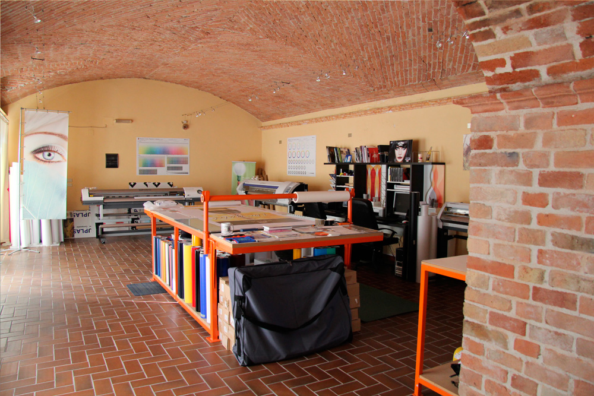
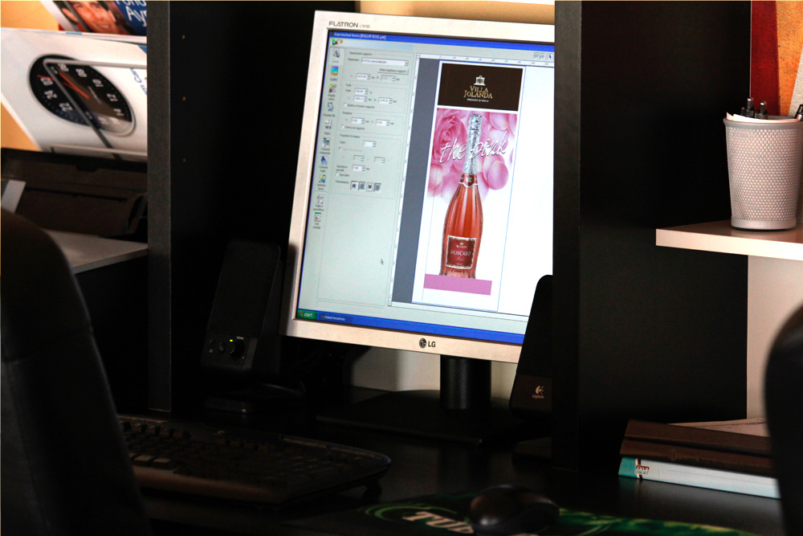

<div class="container imgadesivi">
    <div class="row">
        <div class="col-12 col-md-6">
            <div class="jumbotron my-2">

                <p class="text-justify">
                    Dalla <strong>tecnologia ad intaglio</strong> da anni è ormai possibile ottenere <strong>grafiche adesive prespaziate </strong> facilmente applicabili. <strong>Punto99</strong> usa <strong>supporti vinilici</strong> di diverse tipologie e qualità. E' possibile infatti utilizzare materiali con <strong>durata in esterno fino a 5-7 anni</strong> oppure con caratteristiche particolari, per essere ad esempio <strong>applicati su superfici ruvide o teloni in PVC.</strong> </p>
            </div>
        </div>
        <div class="col-md-6">


        </div>
        <div class="mx-auto">
            <a href="images/001_39z6846o.jpg" data-lightbox=gallery>
               
            </a>

            <a href="images/002_39z6846o.jpg" data-lightbox=gallery>
               
            </a>
            <a href="images/003_9397s905.jpg" data-lightbox=gallery>
               
            </a>
            <a href="images/004_3pc2g6vy.jpg" data-lightbox=gallery>
               
            </a>


        </div>

    </div>
